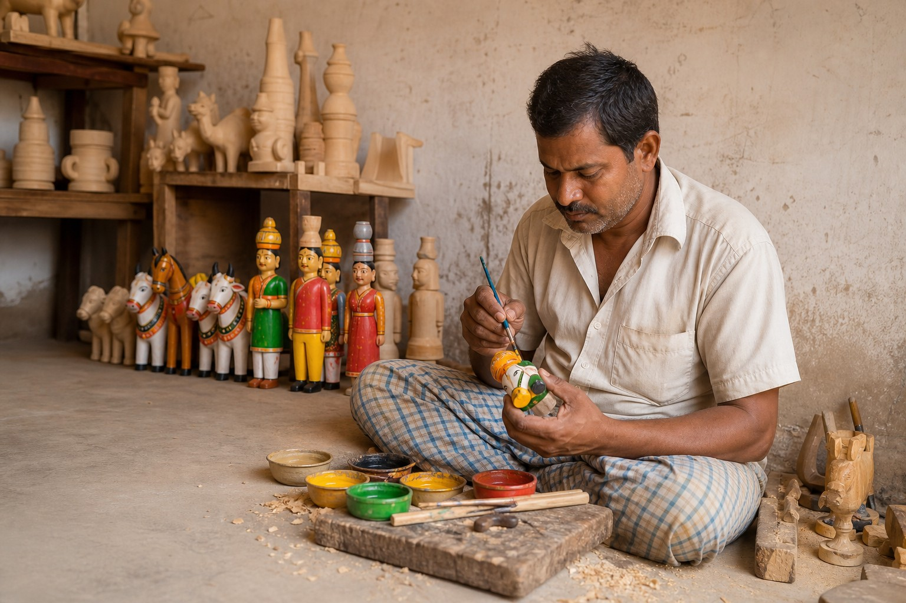
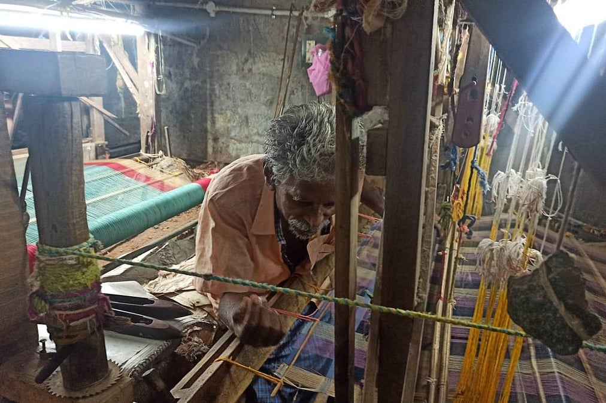

Kondapalli
Bommallu
Wood shaped into character, memory and scenes from everyday Andhra life.
Kondapalli · NTR District · Near VijayawadaExplore Kondapalli →A living cultural journey
Taking Andhra
Heritage Forward.
We begin with three living traditions — Kondapalli Bommallu, Machilipatnam / Pedana Kalamkari and Mangalagiri Handloom — exploring their places, makers, processes and stories, and how their identity can travel forward without being lost.
Explore the three traditions ↓Vision + research stage

Wood shaped into character, memory and scenes from everyday Andhra life.
Kondapalli · NTR District · Near VijayawadaExplore Kondapalli →
A block-printed textile tradition carrying colour, pattern and the memory of Andhra’s Krishna coast.
Machilipatnam / Pedana · Krishna DistrictExplore Kalamkari →
A weaving tradition where cotton, loom rhythm and generations of handloom knowledge come together.
Mangalagiri · Guntur DistrictExplore Mangalagiri →Beginning from our operating base around Vijayawada–Amaravati, QVibe is focusing first on Mangalagiri, Kondapalli and Machilipatnam / Pedana — close enough to study repeatedly before thinking wider.
Between the maker’s hand and the market shelf, something can disappear.
Not the object.
Its identity.

Kondapalli Human hand
Human hand Wood · Carving
Wood · Carving Memory · Everyday lifeIdentity · Place
Memory · Everyday lifeIdentity · PlaceGeneric wooden decorative object
Place unknown · Maker unknown · Story absentThe object survives.
Its identity doesn’t.
The craft reaches the market.
The story does not always reach with it.
QVibe wants both to travel together.
Understanding first.
Documentation with integrity.
Presentation with context.
Connections with purpose.
A future that carries the past into what’s next.
Listen to makers, communities and existing institutions before deciding what the model should become.
Record place, process, material, history and provenance so the object does not become separated from its origin.

Use photography, storytelling and digital design to make Andhra heritage understandable to people discovering it for the first time.

Explore pathways between craft, institutions, cultural audiences and future markets without pretending those relationships already exist.

Explore contemporary relevance without making the craft anonymous or erasing where it came from.

QVibe begins with Kondapalli, Mangalagiri and Machilipatnam / Pedana. Before deciding how the business should ultimately operate, we want to understand these traditions properly — their people, materials, processes, stories, present realities and possibilities.
Go deep before going wide.